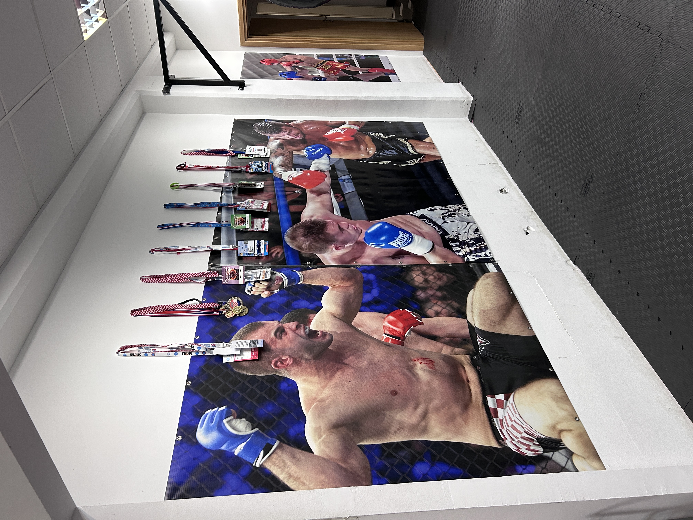
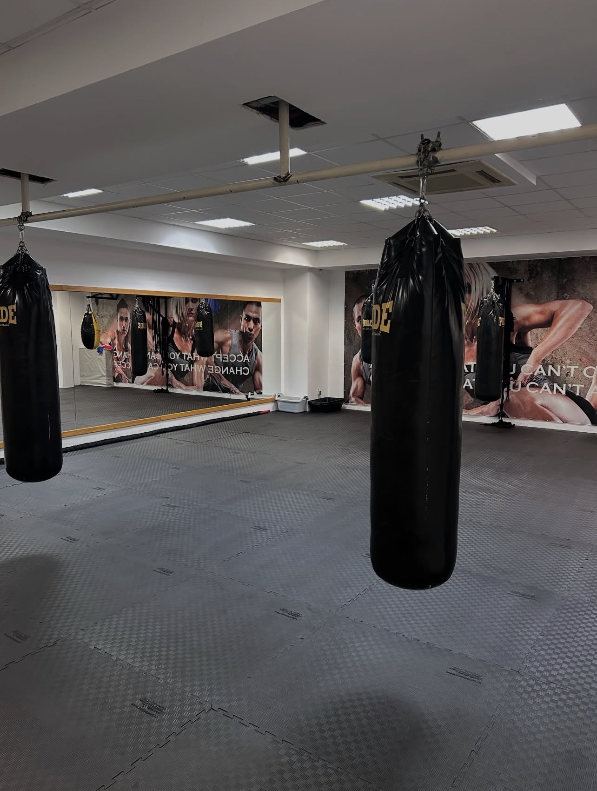
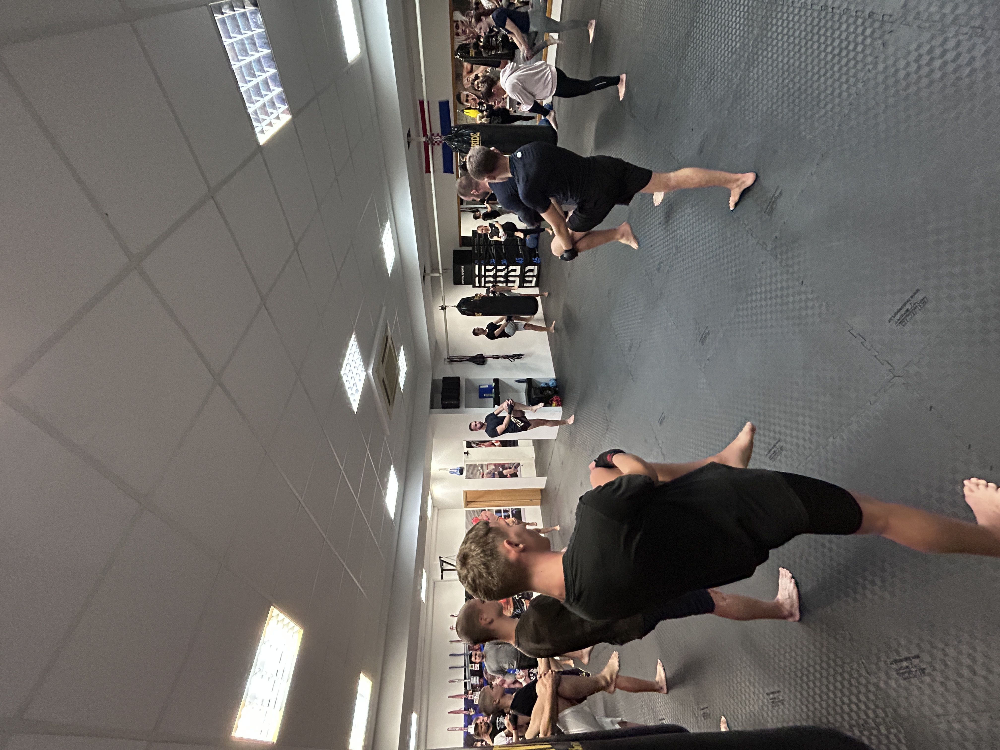

Povijest kluba i rezultati boraca kroz godine
Povijest kluba započinje s Draganom Majkićem, prvim trenerom koji je
svojim znanjem i predanošću postavio temelje rada i razvoja boraca.
Njegov sin Zoran Majkić jedan je od najuspješnijih boraca kluba, s gotovo 80 mečeva
iza sebe. Publika ga pamti po nastupu na Opatija Fight Night 3, gdje je pružio
jedan od najatraktivnijih mečeva večeri. Nakon oporavka od ozljede, ponovno se
vratio treninzima te se očekuje njegov povratak u ring u kategoriji oko 85 kg.
U MMA dijelu kluba nastupa Manuel Karić, hrvatski borac koji je profesionalnu
karijeru započeo 2012. godine te je nastupao u organizacijama poput OMS-a i FV-a.
Posebno se ističe najmlađi borac Roko Benić, koji iza sebe ima 35 pobjeda
i 12 poraza, 3. je na svijetu u Low Kick kategoriji do 81 kg, višestruki
je prvak Hrvatske i član reprezentacije te predstavlja veliku mladu nadu kluba.
Kroz godine, klub je izgradio prepoznatljivo ime zahvaljujući predanom radu,
snažnim osobnostima i borcima koji su svojim rezultatima i nastupima ostavili
dubok trag na domaćoj i međunarodnoj borilačkoj sceni.

Dvorana
Naša dvorana predstavlja središte rada, discipline i sportskog razvoja.
Prostor je osmišljen tako da zadovolji potrebe kako rekreativaca, tako i vrhunskih natjecatelja,
uz naglasak na sigurnost, funkcionalnost i kvalitetu treninga. Opremljena je suvremenom opremom
koja omogućuje razvoj snage, izdržljivosti, tehnike i kondicije.
U dvorani se svakodnevno radi na usavršavanju borilačkih vještina,
razvoju fizičke i mentalne snage te izgradnji samopouzdanja. Treninzi se odvijaju pod stručnim vodstvom,
u poticajnoj atmosferi koja potiče napredak, zajedništvo i sportski duh. Ovo je mjesto gdje se stvaraju borci,
ali i ljudi kroz rad, poštovanje i kontinuirano pomicanje vlastitih granica.

Treninzi
Naši treninzi prilagođeni su svim dobnim skupinama i razinama iskustva.
Roko Benić vodi djecu i starije, fokusirajući se na tehniku, snagu i koordinaciju.
Manuel Karić vodi MMA treninge za napredne borce i natjecatelje, razvijajući izdržljivost i mentalnu otpornost.
Zoran Majkić pomaže Roku u kickboxingu za starije, kombinirajući tehniku i kondiciju za zdrav i aktivan život.
Dragan Majkić nadzire sve treninge i vodi žensku rekreaciju, fokusirajući se na fleksibilnost, kondiciju i zabavu.
Naši treninzi jačaju tijelo, razvijaju disciplinu i koncentraciju te potiču samopouzdanje.
Bilo da želite naučiti borilačke vještine, poboljšati kondiciju ili se rekreirati,
naši programi pružaju motivirajuće i stručne treninge za sve generacije.